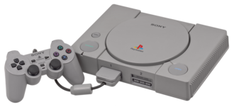
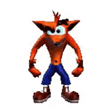
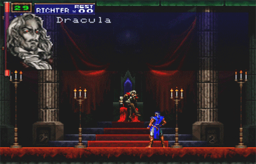

Sony PlayStation (PS1)
A PlayStation é uma consola de videojogos doméstica desenvolvida e comercializada pela Sony Computer Entertainment. Foi lançada no Japão a 3 de dezembro de 1994, seguida pela América do Norte a 9 de setembro de 1995, na Europa a 29 de setembro de 1995 e noutras regiões posteriormente. Como consola de quinta geração, a PlayStation competiu principalmente com a Nintendo 64 e a Sega Saturn.

Jogos que marcaram a consola
- Crash Bandicoot: Plataformas 3D.
- A grande mascote da consola, destacando-se pela sua plataforma 3D frenética e colorida.
- Apesar de ser frequentemente lembrado pelo seu título de estreia, o legado de Crash Bandicoot na PlayStation original estende-se muito além de um único jogo. A Naughty Dog, produtora original da série, desenvolveu uma trilogia formidável: ao clássico original de 1996 seguiram-se Crash Bandicoot 2: Cortex Strikes Back (1997) e o aclamado Crash Bandicoot 3: Warped (1998), que expandiram as mecânicas de plataforma e puxaram pelos limites gráficos da consola. Além das aventuras principais, a PS1 recebeu ainda inesquecíveis spin-offs multijogador, como o icónico jogo de corridas Crash Team Racing (1999) e o frenético Crash Bash (2000), cimentando definitivamente o marsupial como a mascote da era de 32-bits da Sony.

- Castlevania: Symphony of the Night
- Elevou os jogos de ação em 2D com um design de níveis labiríntico interligado, mecânicas de RPG e uma banda sonora inesquecível.
- Embora Castlevania: Symphony of the Night (1997) seja universalmente coroado como a grande obra-prima da série na PlayStation, a presença da franquia na consola teve duas vertentes distintas. Symphony of the Night revolucionou para sempre a indústria, abandonando a estrutura de níveis por fases para introduzir um vasto castelo interligado, elementos de evolução RPG e exploração livre com o vampiro Alucard — ajudando assim a cimentar o famoso género "Metroidvania". Contudo, para os fãs da dificuldade arcade clássica, a Konami editou mais tarde Castlevania Chronicles (2001) para a PS1. Este título trouxe de volta a ação linear tradicional e impiedosa focada no uso do famoso chicote, provando que a consola da Sony conseguiu ser o palco tanto da maior revolução como da tradição histórica da saga.

- Tekken 3
- Considerado um dos melhores jogos de luta em 3D, introduziu um elenco lendário de personagens e gráficos impressionantes para a época.
- A série Tekken foi uma autêntica montra tecnológica para a PlayStation, acompanhando a evolução da consola desde os seus primeiros dias. Embora Tekken e Tekken 2 tenham ajudado a popularizar a consola e a definir os jogos de luta em 3D no mercado doméstico, foi com Tekken 3 (1998) que a Namco atingiu o pico da perfeição na era de 32-bits. Aclamado como um dos melhores videojogos de sempre, Tekken 3 empurrou o hardware da PS1 ao limite, introduzindo animações incrivelmente fluidas, movimentos verdadeiramente tridimensionais (como as esquivas laterais) e um elenco renovado que trouxe lendas como Jin Kazama e Eddy Gordo. Para além dos combates intensos, o jogo inovou ao incluir modos extra inesquecíveis, como o vólei de praia Tekken Ball e o modo de progressão lateral Tekken Force, garantindo horas infinitas de diversão no multijogador local.